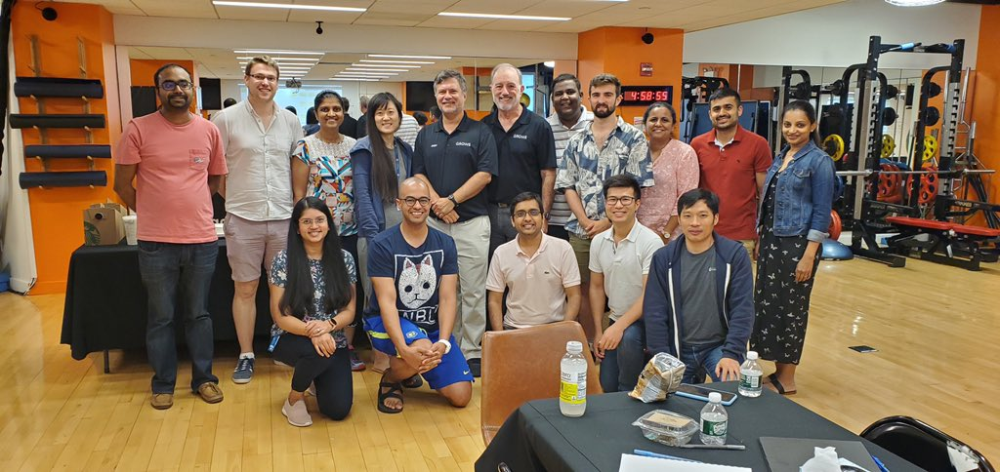

Notes and Thoughts from Grows Method Workshop
./john

1 Context
Last Friday, we had an all-day workshop lead by the Grows Method team. I wanted to document my raw notes and reactions.
The format of the workshop is only partially lecture style, so my notes are probably a little scattered. Overall, our team loved the process. Being able to learn from slides, games, discussion, activities was thoroughly engaging.
2 Part II Raw Notes
As an industry, we're still having the same problems that we used to have in the 80's. Agile has been around for 20 years now, but why isn't agile itself agile? It hasn't changed in 20 years. Many companies use agile ad something tacked on like cardboard spoilers on a bad car. It won't change performance.
Theme Fast feedback, experimentation, and trace bullets are critical
The Dreyfus Model came up again: Novice, Advanced Beginner, Competent, Proficient, and Expert. One idea that stuck out was that an expert isn't just a more knowledgeable novice, they're way of thinking and recognizing patterns is totally different. Even though in the real world there aren't exact dividing lines, there are real distinctions between the skill levels.
When a novice is working, they need more firm rules. E.g. for cooking, you can't tell a novice, "cook until done." They don't know what done means. They need more firm guidance. An expert could have an intuition about when something is done, even if they can't explain it.
Novices also lack system thinking. They view themselves detached from the system and they won't be able to see themselves as part of the problem. When someone on the team has a bad day, the code has a bad day. I think NxJ is pretty strong at recognizing this, organizationally, but novices alone won't.
When it comes to our bias and decision making skills, I really liked the analogy that our brain has bugs and we don't have the source code. These bugs affect our decision making. Additionally, we have faulty memory. "Every read is a write." When we remember something the memory gets changed slightly.
Context is important. Everyone can't "do what Netflix does." We're not all Netflix. The context is important. E.g. It's a best practice to put the truck in front of the trailer. But that best practice doesn't work when launching a boat. The best practice matters.
Generative Seeds:
- Loops not lines
- Feedback loops, virtuous/vicious cycles, systems thinking skills, OODA
- Organic not Robotic
- Context, awareness, critical thinking skills
- Intentional not accidental
- deliberate experiments to drive changes to tech, culture, and learning
- Actuals not Proxies
- Seeking high-quality, local data for decisions, not convenient low-quality proxies
I've heard of tracer bullets before, but it feels like a good reminder of how to develop. Figure out how to build something ends to end. Plan and execute in lines that run end to end. Vs… build the database … then build the service… then build the front-end and try to get them to work together.
Nobody likes change. We have to get everyone to agree to try.
It is remarkable how much long-term advantage people like us have gotten by trying to be consistently not stupid, instead of trying to be very intelligent.
Charlie Munger
I liked the quote above. It reminded me of the rituals that we put in place at Next Jump to avoid making stupid calls and to be brilliant in the basics.
One of the activities we did was to play battle ship. We played two rounds. In the first round, we fired all of our missiles at once. In total our group sank 8 ships. In the second round, we played with feedback from our opponent (normal style) and we sunk 48 ships in total. It's a simple example, but it really made the point sink in about the importance of feedback.
We think a lot about feedback at NxJ, but it was interesting to hear another person talking about how important it is as well. "How can you get feedback as fast as possible from as many sources as possible?" If it's going to take a week to get feedback, how can we get that down to a day or a 1/2 of a day.
One of the exercises that we did illustrated our inability see gradual changes. We watched videos where something changed slowly. Most of the group wasn't able to spot the change. It was a good illustration that when things change slowly we might not notice.
The idea of gradual change extends to a lot of topics. E.g. if a practice, meeting, or routine worked at first, but gradually stopped working, we might not notice. We'll be like the frog that gets boiled.
We read a paper about OODA loops. Reading the paper served a few purposes. We read it and learned about how OODA loops get stuck in OO loops with no decision and no action. We also discussed the paper with our group to understand the other things that our group picked up.
Some notes from OODA:
- Making a decision is not an action, but a process
- The OODA Loop and get stuck
- Competitive advantage comes from quickness over the full loop
- Everyone orients differently
- Information itself is messy
- We usually assume there is a single decision maker. It's much worse
After talking about OODA, we talked a bit about biases especially in terms of how we see information. We can assimilate it or accommodate it.
One of the frameworks mentioned for deal with our own biases and blind spots was to think through this:
- I expect to see something, and I do.
- I don’t expect to see something, and I don’t.
- I expect to see something, but I don’t.
- I don’t expect to see something, but I do.
A lot of times, we won't see a big change, Black Swan, coming because we're asking the wrong questions. E.g. who is going to win the war, Motif or OpenLook.
Pragmatic Razor: Does it work for you?
3 Q&A Notes
- How do you keep up? You can't. But you can learn one new language a year to try to stay in touch.
- When and how to refactor?
- Emphasis is on good enough software. How do you decide, what's good enough. That's a conversation with a user.
- The code is never good enough. It always feel like a pile of garbage
- Terms like "clean it up" "Make it maintainable" "make it extensible" are red flags. You're fortune telling when you do work like that. and we suck at predicting the future.
- A good mindset is to make your code replace able. Can I refactor so that this whole thing can be replaced.
- TDD
- A test is your first user
- It's like having fast real time feedback
- Testing is necessary but not sufficient
- Compiler checks, tests are steps in the right direction, but there are a lot more factors to consider: fit for purpose, do users want it, secure, compliance.
- With testing, you need to decide if you're going to do it first, during, or never because you'll never do it after
- DRY
- Make it so there is one place to make a change.
- Estimates
- Estimating is fortune telling. Don't pad the estimates and don't short change them.
- Best practice is to extrapolate from past trends
- Build a slice of functionality and ship it in a day
- Prioritization is the key and ideally you have financial data to back that up
- How to reflect
- Not everyone is capable of really reflecting. Novice might have the wrong lessons and takeaways
- You have to just practice more before reflecting for some skills
- Having an engineering Day book is a good way to help reflect because our memories are garbage
4 Part II Notes
The second part of the day was more experiential. We did an activity where we tried to build a tower out of spaghetti. We were competing to build the tallest tower. It was a fun activity. Rather than over thinking we just tried to build something rapidly and it worked out well.
After building the initial tower, we took it down and tried to do it again. Most teams did the same exact thing they did the first time. Very little willingness to try something different and fail. It was an interesting real-time failure to innovate where we ended up not wanting to do worse.
After that, we played a card game that basically simulated real word software engineering choices. It was a lot of fun and showed the impact in an interesting way of the investments teams make and the consequences they can have.
"If we aren't shipping code, then why are we here."
5 See Also
- Ladders of inferences
- System 1 and 2
6 References
- Pragmatic Thinking and Learning
- https://vimeo.com/131410262
- https://www.researchgate.net/publication/268415631_OO-OO-OO_The_sound_of_a_broken_OODA_loop
- https://en.wikipedia.org/wiki/Cynefin_framework
- https://en.wikipedia.org/wiki/List_of_cognitive_biases
- https://en.wikipedia.org/wiki/Piaget%27s_theory_of_cognitive_development#Assimilation_and_Accommodation
- https://en.wikipedia.org/wiki/Dreyfus_model_of_skill_acquisition
- http://www.donaldegray.com/wp-content/uploads/2014/09/SkillsForSoftwareSmokeJumpers.pdf